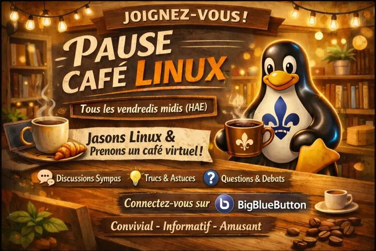

The look of the event day web app (/webapp_event, module event_webapp_plan) for Rencontres Linux au Québec, design version 3 "Pause café animée":
event_webapp_plan_track) shows in the app.Every animation stops with "Pause animations", with the system setting "reduce motion" and in text-only mode, which shows no mascot. The ribbon has its own pause button and is read once, as plain text, by screen readers.
Tux by Larry Ewing, created with The GIMP. The images of Tux with a coffee and the poster were supplied by the Rencontres Linux au Québec organisers. See README.md for the origin and licences of the images and fonts.
Habillage Rencontres Linux au Québec de la webapp de journée d'événement (/webapp_event), version 3 « Pause café animée » : bandeaux bleus à motif de fleurs de lys, ruban de mots, Tux avec son café, Tux vectoriel animé qui salue, sirote son café, fête les gagnants des tirages, porte un casque pendant la conférence et s'endort après la journée. Données de démonstration : une journée d'exemple, avec son agenda dans les salles. Toutes les animations s'arrêtent avec « Mettre les animations en pause », le réglage « réduire les animations » de l'appareil et le mode texte seul.
© 2026 Services-Conseils Linux Inc. (info@rencontres-linux.quebec) · Rencontres Linux au Québec contributors · AGPL-3 or later / AGPL-3 ou ultérieure